La pintoresca Florencia es una de las ciudades más conocidas del mundo. Durante muchos años, Florencia ha sido la cuna de la cultura y del arte, lugar de nacimiento de las grandes figuras del Renacimiento y de la historia de la humanidad. La ciudad vio nacer a Dante Alighieri, padre de la Divina Comedia. Boccaccio, escritor y humanista italiano, dio forma a sus obras en la Florencia del siglo XIV. Pero sin duda, los personajes más importantes que nacieron y vivieron en Florencia fueron Miguel Ángel Buonarroti y el genial Leonardo Da Vinci. Gracias a las obras y maravillas arquitectónicas de estas figuras florentinas, la ciudad recibe cada año miles de turistas que eligen la capital toscana como destino para sus vacaciones.
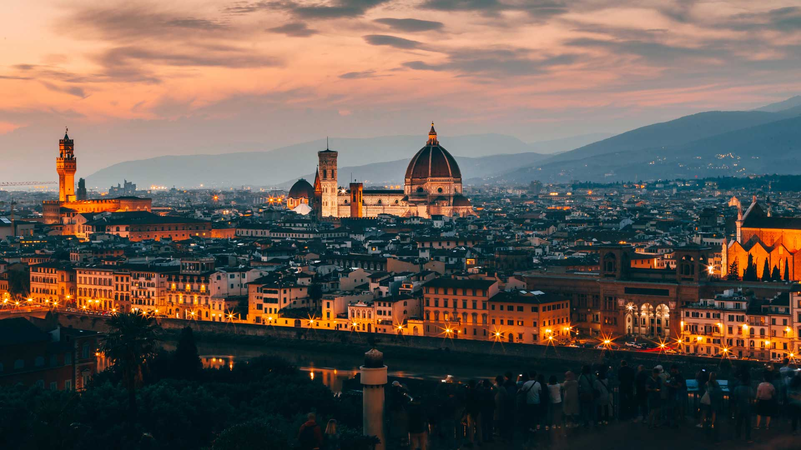 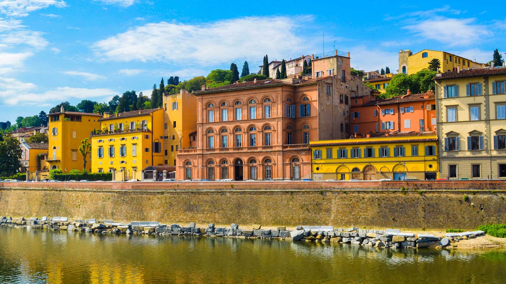 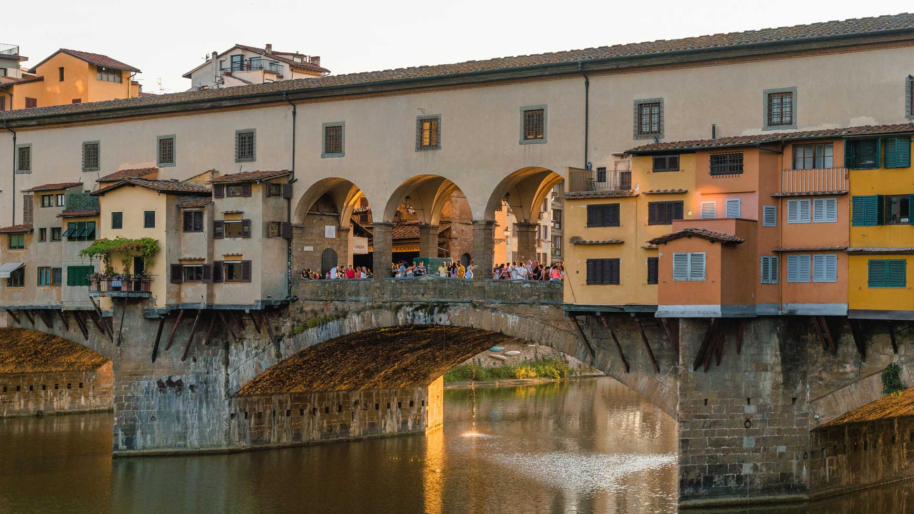 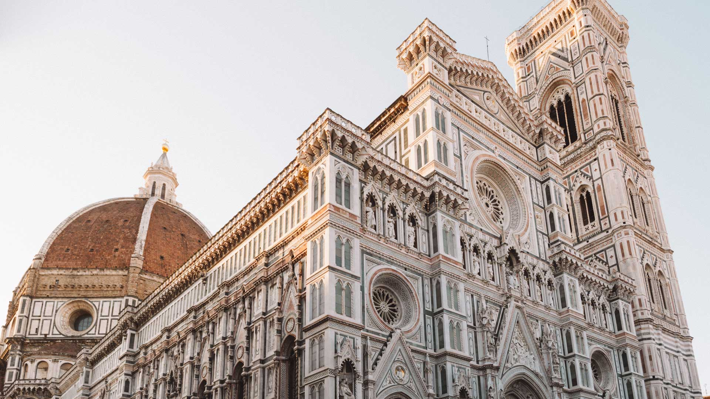Las "cinco tierras" (cinque terre) es una de las màs hermosas zonas naturales mediterraneas en Liguria ,ùbicadas en la parte este de la regiòn con una longitud de aproximadamente 10 km de costa. La componen cinco pueblos antiguos (Monterosso, Vernazza, Corniglia, Manarola, Riomaggiore) construidos en la falda de la colina que pende sobre la costa del mar. Cada uno de estos pueblos tienen caracteristicas urbanas y arquitectònicas muy particulares, debido al terreno en pendencia las casas son edificadas sobre las rocas, las vias son empedradas con callejuelas estrechas y porticados, el terreno es sostenido por enormes rocas y farallones que a su vez sirven de fortalaza sobre toda la costa.
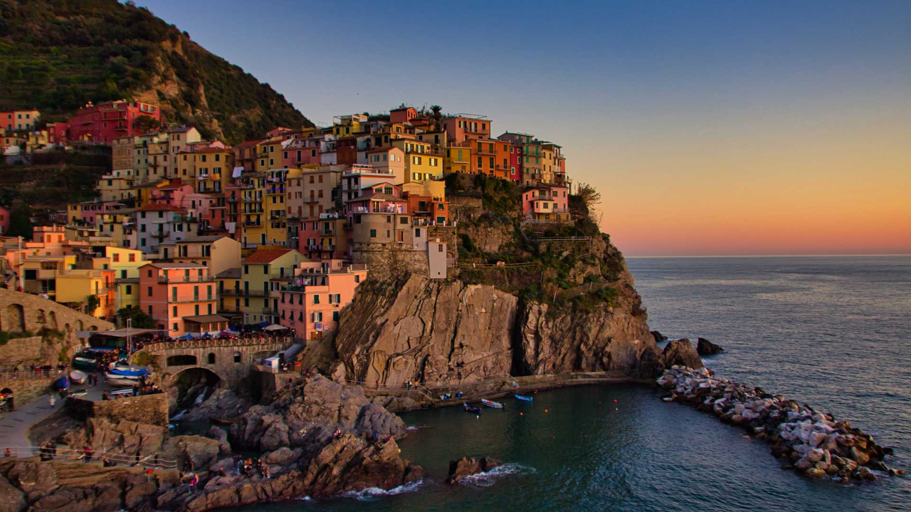 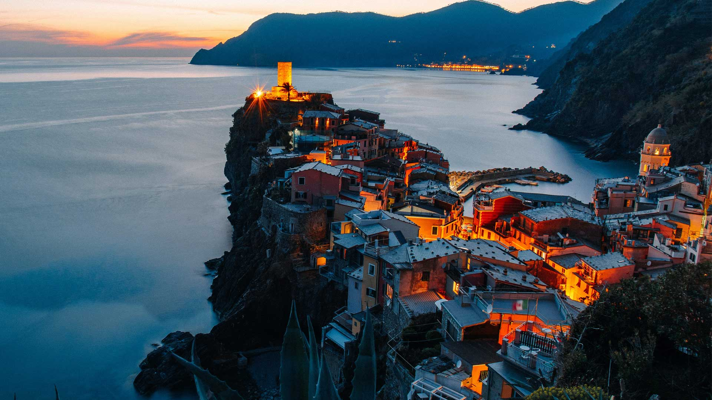 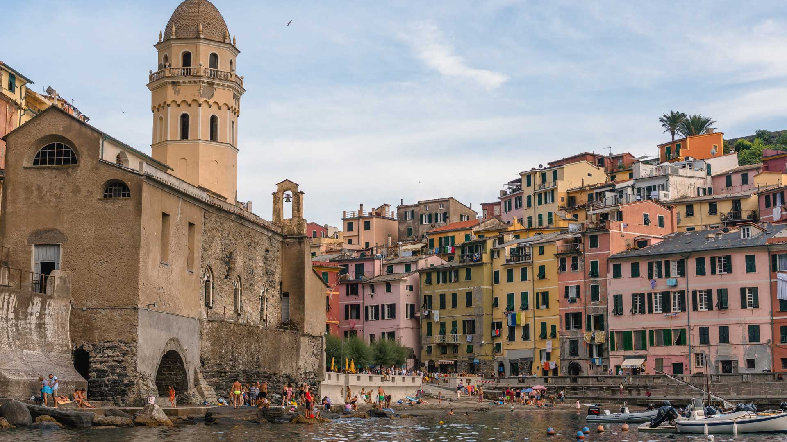 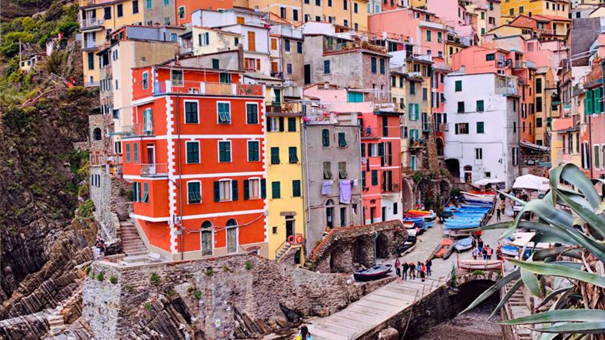Mundialmente conocida como una de las grandes capitales de la moda, Milán es una ciudad que también cuenta con un amplio abanico de actividades culturales y de ocio.Milán ofrece todas las ventajas de una gran ciudad unidas a la comodidad que proporciona su pequeño tamaño, ya que la mayor parte de los puntos de interés se pueden recorrer a pie fácilmente. Entre sus múltiples atractivos, Milán cuenta con una impresionante catedral, un imponente teatro, un gran castillo, antiguas iglesias y una gran variedad de museos y galerías de arte. Para los que prefieran huir del calor del asfalto y refugiarse en un lugar verde y fresco alejándose del mundanal ruido, Milán ofrece la posibilidad de relajarse y disfrutar de una naturaleza exuberante en sus maravillosos lagos.
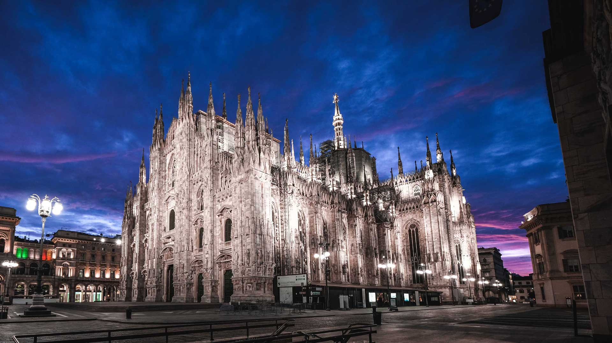 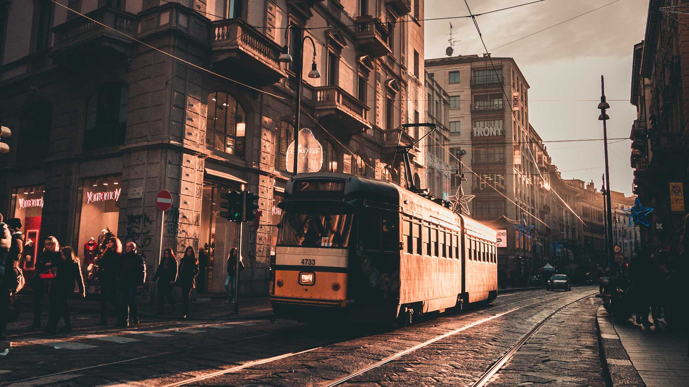 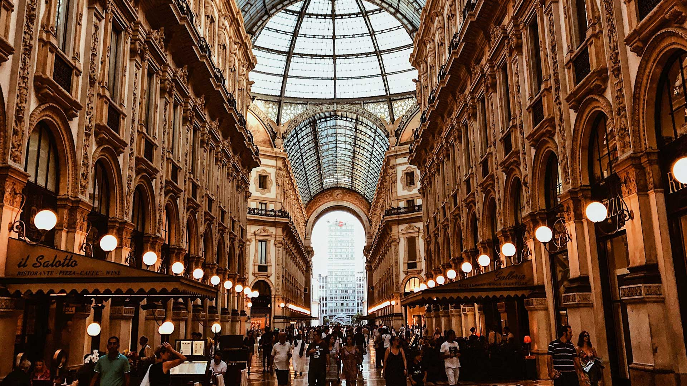 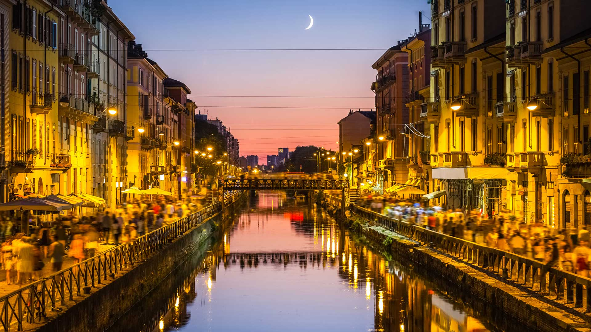Venecia es única entre todas las grandes ciudades del mundo en que sus calles están llenas de agua. Compuesto por 118 islas de dos a cuatro metros sobre el nivel del mar, atravesados por 117 canales y unidas por unas 360 briges. La riqueza, el color, la luz, la textura, y la historia crean una escena de una belleza abrumadora. La ciudad entera es una obra maestra arquitectónica extraordinaria en la que incluso el edificio más pequeño contiene obras de algunos de los artistas más grandes del mundo, como Giorgione, Tiziano, Tintoretto, Veronese y otros.
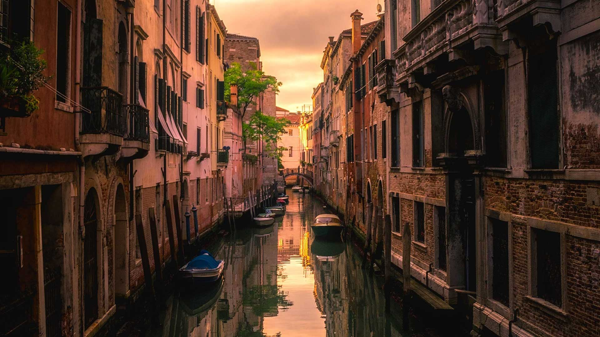 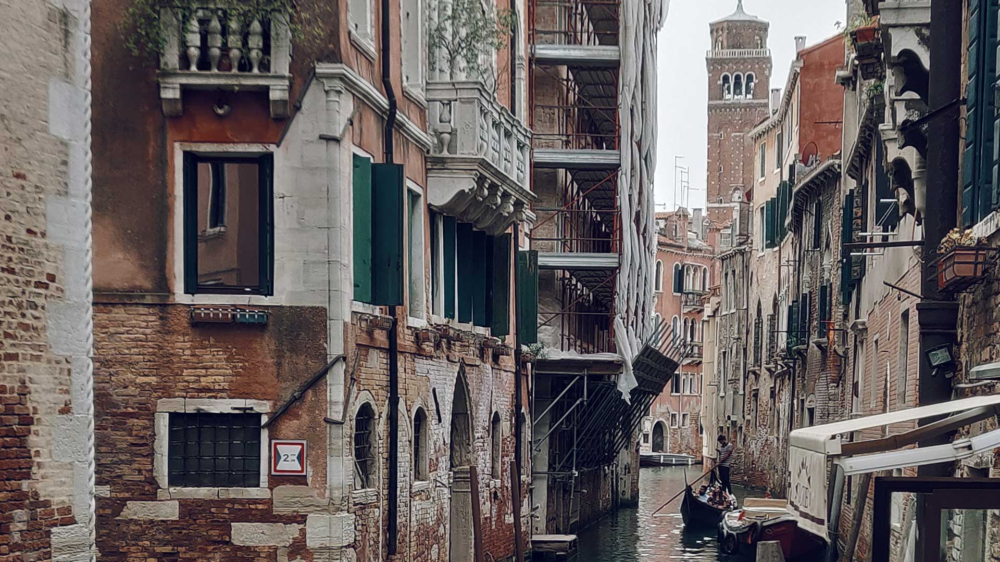 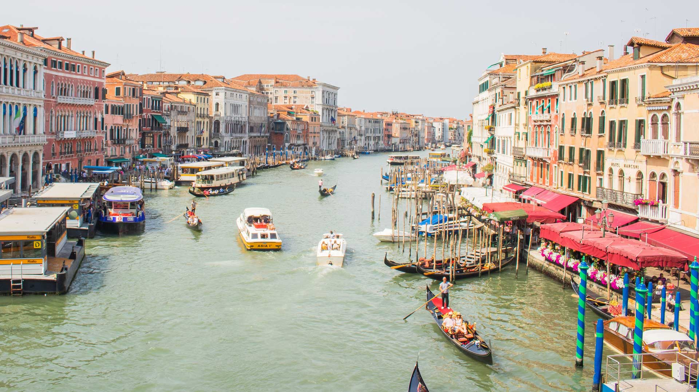 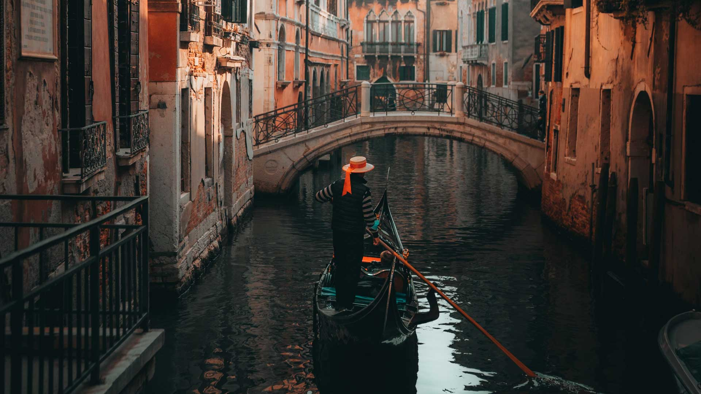